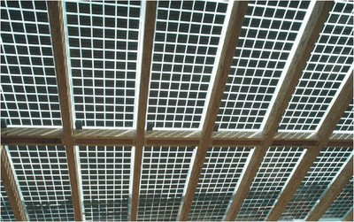
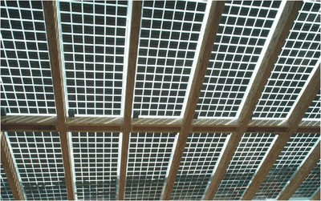
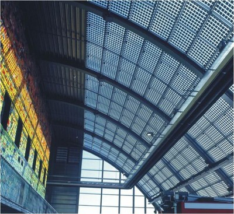

Techos de paneles solares [RMT10]
Techos en donde paneles solares fotovoltáicos cubren más superficie que cualquier otro material. Hay dos tipos de paneles solares: techos solares fotovoltáicos y edificios con integrados fotovoltáicos. Techos solares fotovoltáicos que desplazan techos convencionales y están unidos a través de montajes especiales. Edificios con integrados fotovoltáicos se refieren a módulos fotovoltáicos que están directamente incorporados a la cubierta del edificio reemplazando la cubierta del techo por elementos fotovoltáicos.

Techo solar fotovoltáico, Belgrade, Serbia (L. Stamenic)
 

Techo solar fotovoltáico(vista exterior e interior), Canada (L. Stamenic)

Edificio con integrado fotovoltáico en un salón anti incendios, Germany (L. Stamenic)